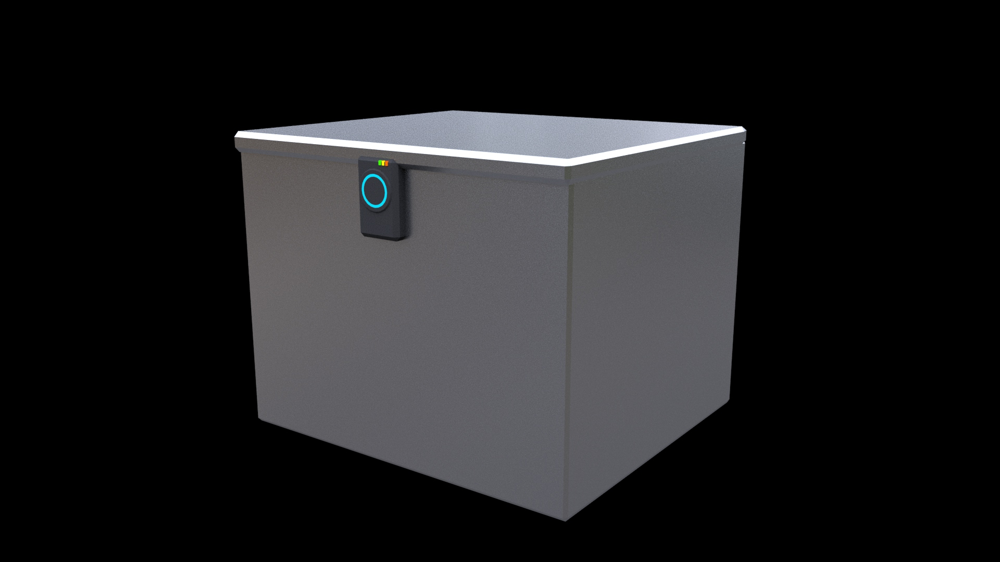
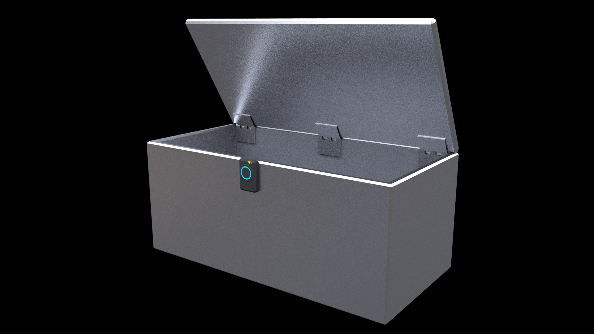

Project description
Overview
Topic
Our project is the creation of a mailing drop-box using NFC technology. This secure lockbox can be easily used by delivery drivers and mailers to securely deliver packages and mail in a way that keeps user and driver accountable, while also protecting them from porch thieves. While integrating the NFC technology, it should simplify secure mailing so that delivery drivers and consumers have logs of when the box has been opened, what has been delivered, and from who. The box will come in many designs and be securely fitted to somewhere on the property that people can see. The outcome of this project is to hopefully prevent thievery, ensure that consumers are happier with their packages, and incorporate all different delivery businesses into 1 big information docket, so that if problems arise, consumers not need to gather all their evidence and send it off to specific companies, but can instead localize it. Another outcome which is topical for modern times is that it should also comply with covid-19 safety standards with contact tracing of who delivers what package, and where delivery drivers go.
Motivation
The team's motivation for this project is to make customers lives easier in the long run and to lower the need of human contact especially during the current era with COVID-19 Covid is a large threat to many people around the world and trying to minimise contact is a must in today's age as it will prevent the spread and save lots of lives. The benefit of having it will be that it will prevent any theft as it will be in a secure location and not left outside where someone can steal it when they can do so when the person is not at home to accept the parcel. You will not have to deal with any junk email that you will end up throwing out anyway and you can hold drivers accountable if their product is damage as it will be recorded who the driver is and when he delivered it to the safe location, and you can have peace of mind that the person doing the delivery is trusted and has a good record. This is also relevant to modern Australian's concern over theft of their packages, in 2020, 14% of surveyed Australians had experienced their packages being stolen from their porch or letter box. In comparison to the rest of Australia from the surveyed group, it accounts for 2.7 Australians having their parcels stolen at one point or another (Finder, 2020)
Potential functionality
 The box is intended to stop theft so there are some deliberate design choices we have made. Firstly the hinges are on the inside so there are no screws visible or accessible from the outside, there is also the option to screen it down from the inside so it is not moveable and prevents it being unscrewed from the outside. Other potential features for the inside of the box is a scale so that when a package is placed inside it can tell if the right thing has been put inside. All packages are weighed already by the post office and most major e-commerce/delivery companies (amazon, eBay, catch) weigh them so this isn't some change to the system but instead adapting them to our needs.
The lock is designed to be easy to understand so that you know what is happening. The way it will work is one of two methods, an NFC sticker on a package which can open the lock and is single use, the sticker would be put on the box by the company delivering it. The other option would be that postmen can use their phone or a device to open the box, the phone or device would list all the packages they would then choose the package for this address and they would then be able to use their device to open the box, this also allows you to track who is opening it.
When the box is scanned with the device or sticker it will give 2 responses, if it’s the correct sticker the light will turn green, if its wrong it turns red and while neutral it will be blue.
We've made a good point of keeping the user informed about their package, but they also need to know about their safe box. The three lights above the big circle would represent a few things.
the green light would represent power so you know it still has power, the box would have the option to be connected to the grid or run-on batteries like a ring doorbell camera or other smart home devices.
The yellow light would represent Wi-Fi connection, it might not necessarily have to be connected to the internet as the box could store used keys on the sticker or device but it is another level of security to have it verified by a server or something similar.
The orange light could represent whether or not the box is locked properly, though this could be an issue as it tells people its open or not. There certainly is another use for this or it could simply be removed.
Landscape
What similar systems or products are available? What competitors are there? What points of difference are there about your project compared to what exist now? At least one paragraph is expected. Similar products/competitors:
- Boxlock
- Boxlock
Detailed description
Aim
1. Make customer’s lives easier
This goal refers to customers’ concerns regarding their delivery being something they do not need to stress or think about. When this goal is achieved customers would have not to worry about the delivery of their product, their product getting damaged, or the product getting stolen. In addition to this, many potential users also would not feel stressed if they are not home and their package gets delivered into the Smart Drop Box.
2. Lower need of human contact
This goal eliminates the need for the deliverer and the customer to encounter each other. This is a goal due to the uncertain times we have been living in the past year and a half with covid-19 restrictions complicating human contact and package deliveries.
3. Prevent thievery
This goal refers to the Smart Drop Box being durable and un-breakable by thieves and other criminals. With its electronic locks being unpickable by the most skilled of lockmasters and strong enough to withstand strikes from blunt weapons like sledgehammers and power-tools. In addition to this the box can be bolted down to the ground so even vehicles or heavy industrial machinery would have trouble moving the box. This goal of preventing thievery is the main reason our team used this idea as our project as our customers are most likely those who are victims to porch pirates.